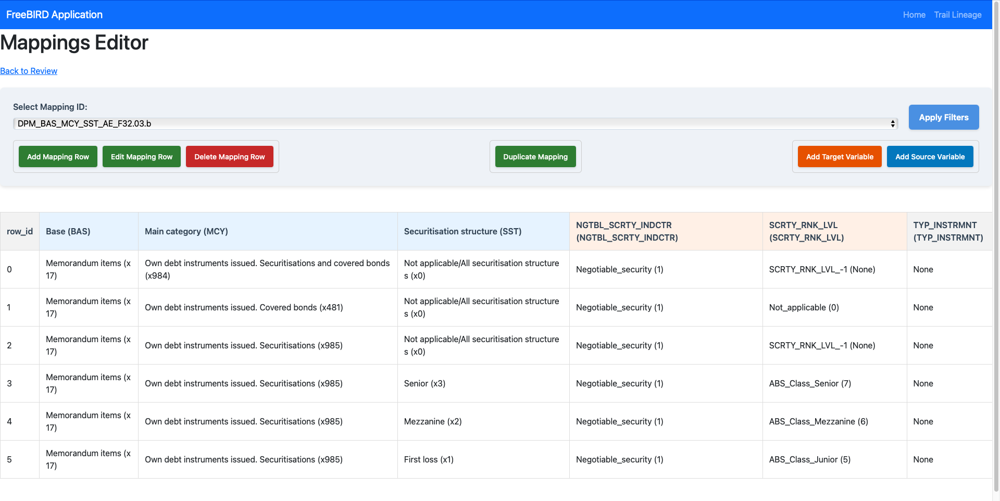

Feature Overview
The Mapping Editor is a sophisticated data transformation tool within Eclipse Free BIRD Tools that enables users to create, manage, and modify complex mappings between source and target data variables. This interface serves as the bridge between various source systems and regulatory reporting structures, facilitating precise data alignment and transformation for compliance purposes.
Purpose
The Mapping Editor addresses the critical challenge of data transformation in regulatory environments by providing:
- Semantic Integration Editor: Map source system data to regulatory reporting requirements
- Variable Management: Control both source and target variable definitions
This feature is essential for data engineers, compliance officers, and business analysts who need to ensure accurate data flow from operational systems to regulatory reports while maintaining full transparency and control over transformation processes.
Getting Started
Prerequisites
Before using the Mapping Editor, ensure:
- The import of the relevant data (most likely done in step 1 of the workflow dashboard)
- Knowledge of target regulatory requirements
- Access and understanding to both source and target variable definitions
- Familiarity with the reference terminology used in the BIRD
Accessing the Mapping Editor
Navigate to the FreeBIRD Application and access the Mapping Editor from the main dashboard. The interface provides comprehensive tools for creating and managing data mapping between frameworks.

Step-by-Step Guide
Understanding the Interface
The Mapping Editor consists of several key areas:
Control Panel Components
- Select Mapping ID: Dropdown menu to choose from existing mappings (e.g.,
DPM_BAS_MCY_SST_AE_F32.03.b) - Apply Filters: Filter criteria to focus on specific mapping data
- Navigation: Quick access to home, lineage tracking, and review functions
Action Buttons
Row Management:
- Add Mapping Row (Green): Creates new mapping entries
- Edit Mapping Row (Green): Modifies existing selected rows
- Delete Mapping Row (Red): Removes selected mapping rows
Mapping Operations:
- Duplicate Mapping (Green): Creates copies of existing mappings
Variable Management:
- Add Target Variable (Orange): Defines new target variables and members
- Add Source Variable (Blue): Adds new source variables and members
Managing New Mappings
As you can imagine, the mapping editor does not create any mapping, it only edits and duplicate existing mappings.

Initialize Mapping
- Select an existing mapping from the Select Mapping ID dropdown as a template, or
- Create a new mapping by using Duplicate Mapping with a new name
- Choose appropriate naming conventions that reflect the data flow
Define Source Variables
- Click Add Source Variable to open the variable definition dialog
- Specify variable, member name. Constraints are already defined, given the mapper only gives you a choice to map to data members for now.
Define Target Variables
- Click Add Target Variable to open the variable definition dialog
- Specify variable, member name. Constraints are already defined, given the mapper only gives you a choice to map to data members for now.
Create Mapping Rows
- Click Add Mapping Row to establish source-to-target relationships
- Select target data members from available options for all defined variables
Viewing Mapping Details:
- Use the dropdown to select specific mappings
- Apply filters to focus on relevant mapping rows
- Review the data grid showing complete source-to-target relationships
- Examine transformation rules and validation logic
Modifying Mappings:
- Select specific rows in the data grid
- Click Edit Mapping Row to modify transformation rules
- Update variable definitions using the variable management buttons
- Save changes to persist modifications
Removing Mappings:
- Select unwanted rows or entire mapping sets
- Use Delete Mapping Row to remove selected items
- Confirm deletion to prevent accidental data loss
- Review impact on dependent systems before finalizing
Best Practices
Mapping Design
- Standardize Naming: Use consistent conventions for mapping IDs and variable names
- Version Control: Maintain records of mapping changes and evolution and contribute if your mapping could be used (through the pull Request creation)
- Regular Cleanup: Remove obsolete mappings to maintain usability
Quality Assurance
- Cross-Reference: Verify mappings against regulatory documentation
- Peer Review: Have mapping logic reviewed by business and technical experts
Conclusion
The Mapping Editor provides comprehensive capabilities for managing complex data transformations in regulatory environments. By offering both detailed control over individual mappings and powerful batch operations, it enables organizations to maintain accurate, auditable data flows from source systems to regulatory reports while ensuring compliance with evolving requirements.
Next Steps
- Explore the Cube Links View and Edit feature for understanding data relationships
- Review the Member Hierarchy Editor for hierarchical data organization
- Learn about Workflow Dashboard integration for automated processing
For complex transformation logic support or advanced mapping strategies, connect with our community via Eclipse Chat or email efbt-dev@eclipse.org.